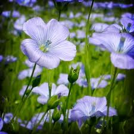

Lin cultivé

Lin cultivé (Linum usitatissimum de la famille des Linacées)
Attention : hautement toxique par ingestion pour le Korat !
Partie toxique pour les chats en général et le Korat en particulier :
Graines et germes.
Symptômes du processus pathologique :
Vertiges, tremblements, vomissements, crampes, convulsions, Tachypnée (augmentation anormale de la fréquence respiratoire), arrêt respiratoire (lors de cas extrêmes, la mort peut survenir en quelques secondes), bradycardie : pulsations cardiaques en dessous de 60 par minute.
Origine de la toxicité (principe actif) :
Un hétéroside cyanogénétique, le linamaroside et la lotaustraline.